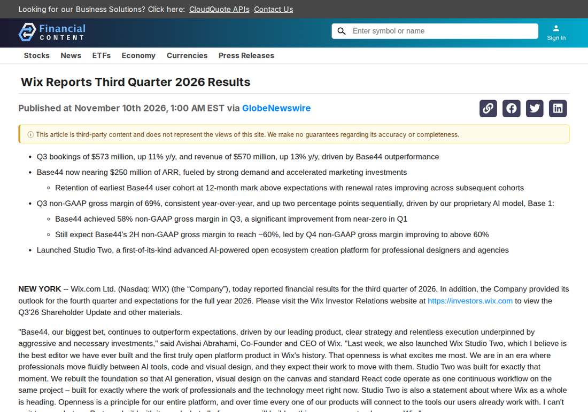

Wix Q3 Revenue Hits $570 Million as Base44 Nears $250 Million ARR
Wix reported third-quarter 2026 revenue of $570.2 million, up 13% year over year, driven by Base44, its AI app-building product, which is now nearing $250 million in annual recurring revenue. Base44's non-GAAP gross margin reached 58%, up from near zero in the first quarter, as Wix's proprietary Base 1 model cut AI inference costs. Wix trimmed its full-year free cash flow margin outlook to about 16% on accelerated Base44 marketing spend, launched the AI-powered Studio Two platform, and named co-founder Nir Zohar co-CEO.
- 01THE RESULTS — Wix reported third-quarter 2026 revenue of $570.2 million on November 10, 2026, up 13% year over year, with bookings of $573 million, up 11%, driven by Base44, its AI app-building product, which is now nearing $250 million in annual recurring revenue.
- 02BASE44 ECONOMICS — Base44's non-GAAP gross margin reached 58% in the quarter, up from near zero in the first quarter, as Wix's proprietary Base 1 model cut AI inference costs. The earliest user cohort renewed above expectations at 12 months, and annual plans rose to more than 20% of new September subscriptions from about 5% a year earlier.
- 03THE WATCHPOINT — Whether Base44's ARR momentum converts into bookings and revenue over the coming quarters as Wix promises, whether the accelerated marketing spend behind it keeps pressuring free cash flow, and whether Studio Two's open platform wins professional builders.
WHAT HAPPENEDWhat Happened
Wix reported third-quarter 2026 revenue of $570.2 million on November 10, 2026, up 13% year over year, with bookings of $573 million, up 11%. Growth was driven by Base44, the no-code AI app-building platform Wix acquired in 2025, which is now nearing $250 million in annual recurring revenue. Total ARR reached $2.021 billion, up 15%, with Creative Subscriptions revenue of $406.7 million, up 14%, and Business Solutions revenue of $163.5 million, up 10%.
The more telling number is Base44's margin. Its non-GAAP gross margin reached 58% in the third quarter, up sharply from near zero in the first quarter, and Wix expects it to exit the year above 60% and approach the core business margin next year. Chief financial officer Lior Shemesh credited meaningful reductions in AI inference costs delivered by Wix's proprietary Base 1 model. Retention also improved: the earliest Base44 user cohort passed its 12-month mark with renewal rates above initial expectations, renewal rates rose across each subsequent cohort, and annual plans made up more than 20% of subscriptions bought by the September 2026 cohort, up from about 5% a year earlier.
The growth is being bought, not just earned. Wix cut its full-year 2026 free cash flow margin outlook to approximately 16%, down from the high-teens previously expected, citing accelerated sales and marketing investment in Base44, and flagged a roughly $10 million fourth-quarter working capital headwind from prepaying for GPUs to run its models. The company maintained its top-line guidance of low- to mid-teens revenue growth for the year. Alongside the results, Wix launched Studio Two, an AI-powered open creation platform for professional designers and agencies, and appointed co-founder and president Nir Zohar as co-chief executive alongside Avishai Abrahami, effective immediately, with Abrahami focusing on product, AI and technology.
WHY IT MATTERSBase44's margin turn is the real earnings story
A year ago Base44 was a fast-growing product with near-zero gross margin, the classic AI wrapper problem: every new user cost nearly as much in inference as they paid. A 58% margin in one quarter, on the way to 60%-plus, changes the shape of the business. Wix says the improvement comes from its own Base 1 model cutting inference costs, which means the margin gain is a technology result, not a price increase, and it is the kind of compounding advantage that is hard for a rival to copy quickly.
The cohort data backs the durability claim. The first Base44 users under Wix renewed at rates above expectations at 12 months, later cohorts renewed better still, and the shift toward annual plans, from about 5% to more than 20% of new subscriptions, turns a monthly-billed AI product into steadier revenue. ARR near $250 million is still small against Wix's $2 billion total, but it is growing fast enough to be the company's stated growth engine for the rest of the year.
WHY IT MATTERSGrowth is being bought with marketing spend, and the bill is visible
The counterweight is in the outlook. Wix trimmed its free cash flow margin target to about 16% from the high-teens because it is pouring money into Base44 sales and marketing, and it expects to reinvest further gross margin gains into marketing in the fourth quarter. Free cash flow was $74.5 million in the quarter, or $99.6 million excluding restructuring costs, equal to 17% of revenue. The company is explicit that the spend is paying off in top-of-funnel momentum, but the trade is now measurable: every point of ARR growth this year carries a marketing cost that shows up in the cash flow line.
The Studio Two launch and the co-CEO appointment point at the same bet from different directions. Studio Two opens Wix's editor to outside AI tools and standard React code, a pitch to professional builders rather than hobbyists, while Zohar takes business strategy and go-to-market so Abrahami can focus on product and AI. The question for the next two quarters is whether the ARR momentum converts into bookings and revenue at the pace Wix promises, or whether the marketing bill keeps rising faster than the revenue it buys.
SIGNAL JUDGMENT — ANALYSISBase44's economics now work; the open question is what the growth costs
Tokenta Signal's judgment: The headline revenue beat matters less than the margin line. Base44 going from near-zero to 58% gross margin in three quarters, on the back of Wix's own inference model, is the difference between an AI feature that burns cash and an AI business that scales. Retention and the shift to annual plans say users are staying, not just trying. The honest offset is the price: Wix cut its free cash flow margin guide to pay for the marketing behind that growth, and the GPU prepayment shows the infrastructure bill is rising too. The story to watch is conversion, whether the near-$250 million ARR turns into bookings and revenue over the next two quarters at the pace Wix promises, or whether the marketing spend keeps outrunning it.
WHAT REMAINS UNCERTAINWhat Remains Uncertain
EVIDENCEEvidence

Wix's third-quarter 2026 results release, read in full: revenue of $570.2 million, up 13% year over year, with bookings of $573 million, up 11%, driven by Base44, the company's AI app-building product, which is now nearing $250 million in annual recurring revenue. Base44 achieved a 58% non-GAAP gross margin in the quarter, up from near zero in the first quarter, driven by Wix's proprietary Base 1 AI model. Wix cut its full-year free cash flow margin outlook to approximately 16% on accelerated Base44 marketing spend, launched Studio Two, and appointed co-founder Nir Zohar as co-CEO alongside Avishai Abrahami.
PRIMARY SOURCESPrimary Sources
- GlobeNewswire via Morningstar: Wix Reports Third Quarter 2026 Results
https://www.morningstar.com/news/globe-newswire/1001302735/wix-reports-third-quarter-2026-results - Quantisnow: Wix Reports Third Quarter 2026 Results
https://www.quantisnow.com/insight/wix-reports-third-quarter-2026-results-6782382 - FinancialContent: Wix Reports Third Quarter 2026 Results
https://www.financialcontent.com/article/gnwcq-2026-11-10-wix-reports-third-quarter-2026-results